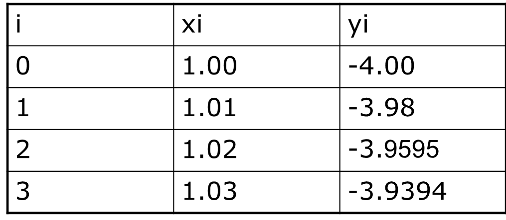

Tugas 6
PERSAMAAN DIFERENSIAL BIASA
METODE EULER
Metode Euller dikembangkan dari persamaan deret Taylor:
Suku ketiga dan seterusnya diabaikan, sehingga persamaannya menjadi
dy/dx = y’ = f(x,y)
y(x0) = y0
dimana :
x0, y0 merupakan nilai awal yang diketahui
h = increment dari x (penambahan x)
y’(x0) = slope dari kurva.
Sehingga persamaannya dapat dituliskan:
Atau yang lebih umum:
dimana n = 0,1,2,3,…
.
Soal
Buatlah program untuk menyelesaikan persamaan differensial biasa berikut dengan menggunakan metode Euler
dy/dx = 1+x^2 , y(1) = -4
Untuk menentukan y(1.01), y(1.02) dan y(1.03).
.
Penyelesaian
Diketahui :
Hasil :

Bandingkan dengan nilai sesungguhnya :
Grafik penyelesaian dari PDB 1<x<2 :

Listing Program
yo = -4
x = 1
xo = float(input("Masukkan nilai x0 : "))
print("=======================================================")
n = 4
h = 0.01
y = 0
#Metode Euler
for i in range(n):
if i == 0 :
print("Diketahui : \nf (x,y) = 1 + x^2\tx"+str(i)+" =",xo,"\nh = 0,01","\t\ty"+str(i)+" =",yo)
print("=======================================================")
else :
hasil = yo + h*(1+(xo)**2)
y = yo
yo = hasil
print("Langkah "+str(i)+" :\nx"+str(i)+" =",xo+h)
print("y"+str(i)+" =","y"+str(i-1)+" + h * f (x"+str(i-1)+","+"y"+str(i-1)+")")
print("y"+str(i)+" = "+str(y)+" + "+str(h)+"("+str(x)+"+("+str(xo)+")^2"+")","=",yo)
print("=======================================================")
xo += h
Hasil running
Masukkan nilai x0 : 1
=======================================================
Diketahui :
f (x,y) = 1 + x^2 x0 = 1.0
h = 0,01 y0 = -4
=======================================================
Langkah 1 :
x1 = 1.01
y1 = y0 + h * f (x0,y0)
y1 = -4 + 0.01(1+(1.0)^2) = -3.98
=======================================================
Langkah 2 :
x2 = 1.02
y2 = y1 + h * f (x1,y1)
y2 = -3.98 + 0.01(1+(1.01)^2) = -3.959799
=======================================================
Langkah 3 :
x3 = 1.03
y3 = y2 + h * f (x2,y2)
y3 = -3.959799 + 0.01(1+(1.02)^2) = -3.9393949999999998
=======================================================
.
Sekian & Terima kasih:))
.
.